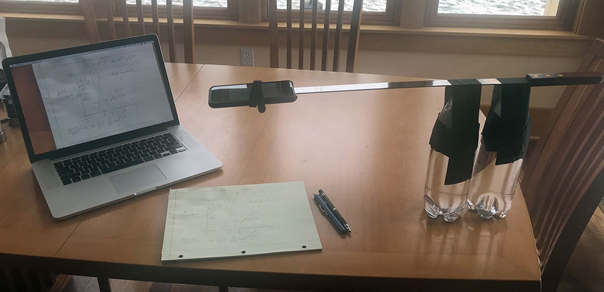
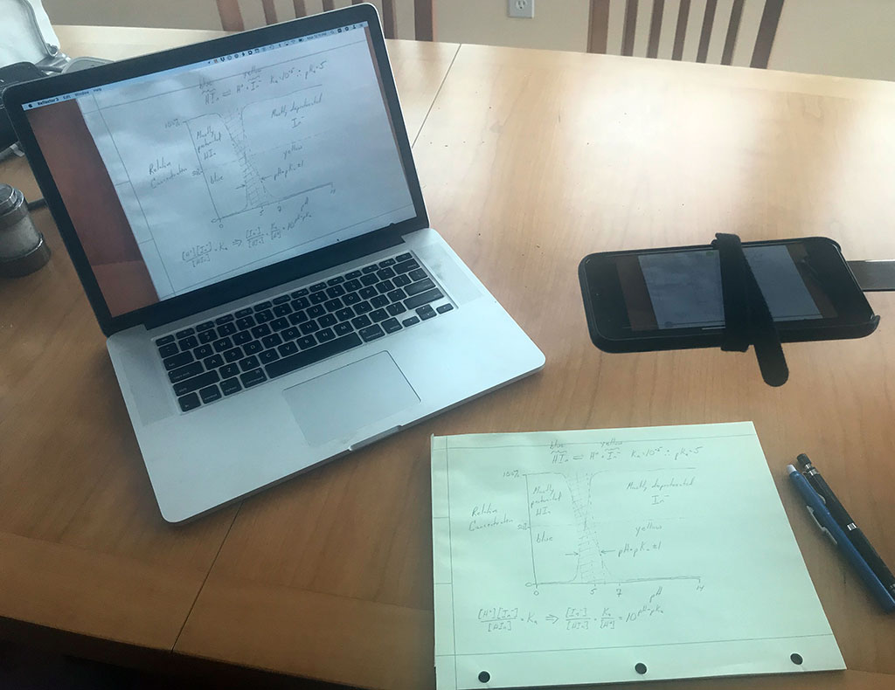
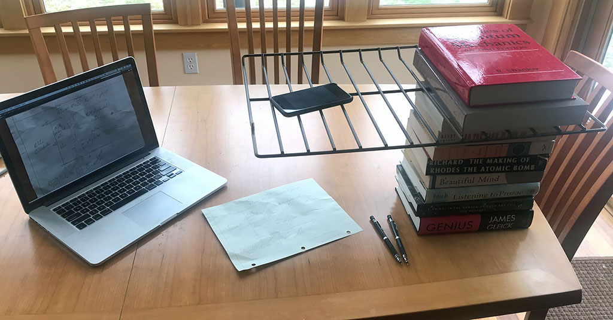

Use your iPhone or iPad to stream your writing and drawing to your computer.

With so many of us moving to videoconferenced instruction and office hours, I wanted to find a way to use everyday household objects to make a document camera. In the setup pictured above, I filled two empty liter bottles with water and taped a long straight object (here a kebab skewer) to the top. My iPhone was fastened to the end of the boom with some velcro ties, but rubber bands would be even better. The iPhone is running Big Screen II and streaming the image over wifi to AirServer or Reflector 3 running on the Mac. As you can see below, an image of the drawing on the paper is being shown on the Mac.

To videoconference with this setup, the Mac would join the videoconference and screen share its desktop. The presenter can then switch between the document camera and other modalities (e.g., PowerPoint) without changing any screen-sharing settings.
Here is an alternative setup that only requires access to books and an oven. Note the orientation of the books below the rack, which improves stability.

Big Screen II is free on the App Store. AirServer is available for Mac and Windows for $11.99 (educational users) or $19.99 (other users). Reflector 3 is available for Mac and Windows for $17.99. (I have no financial interest in any of these.)
Android users or pre-iOS 13 users could use the camera app built into their cell phone; however, the on-screen controls would be displayed. If you find software that avoids this, please send me an e-mail so that I can share your solution.
Windows users: If you have problems getting AirServer to work, check your firewall.
Android users: To connect to AirServer, you need to find the “screen cast” option on your phone. This is available in the same pull down menu as wifi, bluetooth, etc. If you do not see it, you need to edit your “visible” options in that menu. Once you click on screen cast, the phone will find your laptop to connect to as long as AirServer is running on your computer.